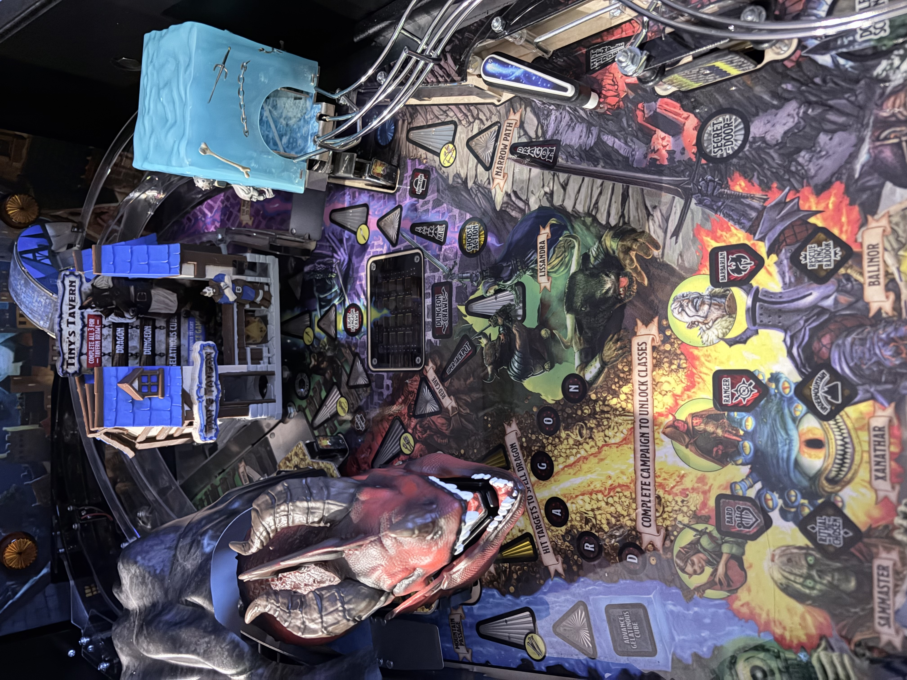

Lately, I have been relearning a lot of material from my previous courses. I am excited to be back into programming; my classes last semester were all theory and hardware. I have been studying non-stop since Monday. I am graduating at the end of this semester, and I want to make sure I finish strong! I had to put my hobbies on hold—I was designing a 3D-printed tavern for a pinball game I own. It came out so well that I am going to try and sell it online. I have been optimizing the multicolor transitions for the print as I go. One tavern initially took 2 days and 1,000 grams of filament to print. I touched up the paint job in the slicer to reduce filament swaps that happened in unnecessary spots. I've now gotten it down to 700 grams and 1 day and 22 hours of print time. The second one is printing as I type this. It's almost done!
